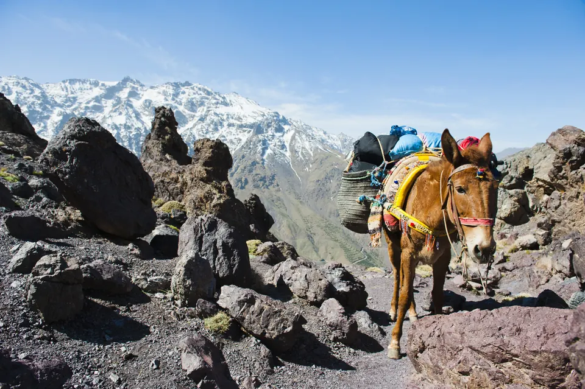
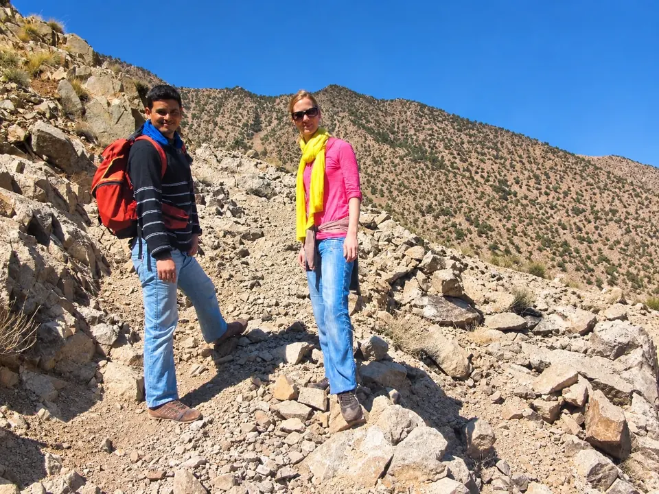

Préparer son voyage · MOROCCO EXPLORER TOURS
Préparer son trek dans le Haut Atlas : sac, condition physique et altitude
Un trek réussi commence chez soi, quelques semaines avant le départ. Pas besoin d’être un athlète pour marcher dans le Haut Atlas, mais un peu de préparation fait toute la différence entre une épreuve et un vrai plaisir. Voici ce que je conseille à tous ceux qui partent avec nous.

Quel niveau faut-il ?
Sur nos treks du Toubkal, les journées comptent entre cinq et neuf heures de marche, avec jusqu’à 1 300 mètres de montée sur l’étape qui mène au refuge, et une longue journée pour le sommet. Il faut donc être capable de marcher plusieurs heures en montée, plusieurs jours d’affilée.
Le meilleur entraînement est simple : des randonnées avec du dénivelé, des escaliers, de la marche rapide, si possible avec le sac que vous emporterez. Le trek de l’Oued Zat est plus modéré ; la boucle par la vallée d’Azzaden est la plus exigeante de nos itinéraires.
L’altitude, sans la craindre mais sans l’ignorer
Au-dessus de 2 500 à 3 000 mètres, le corps reçoit moins d’oxygène. Le mal aigu des montagnes peut toucher n’importe qui, même les plus sportifs : maux de tête, nausées, fatigue inhabituelle, sommeil difficile. Nos programmes montent progressivement, avec une nuit au refuge à 3 207 mètres avant le sommet.
Les règles d’or : marcher lentement, « chwiya chwiya » comme on dit ici, boire régulièrement et signaler tout de suite le moindre symptôme au guide. Si les signes s’aggravent, on redescend : c’est le traitement le plus efficace, et il n’y a aucune honte à renoncer à un sommet.
Les mules portent, vous marchez léger
Sur nos treks, les bagages sont portés par des mules, accompagnées par un muletier. Préparez un sac souple, pas de valise rigide, en respectant la limite de poids indiquée dans nos conditions. Les mules ne prennent pas toujours le même chemin que vous et arrivent parfois après le groupe.
Vous ne portez donc qu’un sac de journée de 20 à 30 litres, avec ce dont vous avez besoin pendant la marche : eau, vêtement chaud, veste de pluie, protection solaire, en-cas, médicaments personnels, papiers et argent.

Gîtes, refuges et bivouac
Selon l’itinéraire, vous dormez en gîte d’étape, au refuge du Toubkal, chez l’habitant ou en bivouac. Le confort est simple : dortoirs ou chambres partagées, sanitaires communs, eau chaude et électricité parfois limitées. Les nuits en altitude sont froides en toute saison.
Prévoyez un sac de couchage chaud, que vous apporterez ou louerez selon ce que nous confirmons à la réservation, des bouchons d’oreilles pour les dortoirs, une lampe frontale et une petite serviette qui sèche vite.

Eau, argent et papiers
Ne buvez pas l’eau des sources ou des robinets sans la traiter : utilisez des pastilles de purification ou un filtre, ou achetez de l’eau en bouteille dans les gîtes. Une gourde réutilisable limite le plastique en montagne, où les déchets sont difficiles à évacuer.
Retirez des dirhams à Marrakech avant de partir : les distributeurs sont rares, voire absents, dans les villages de montagne, et la carte bancaire n’est presque jamais acceptée. Gardez votre passeport sur vous : il peut être demandé pour l’enregistrement dans les hébergements.
L’assurance, indispensable
Une assurance voyage est exigée sur nos treks. Vérifiez qu’elle couvre la randonnée en montagne jusqu’à l’altitude du voyage, ainsi que la recherche, le secours et l’évacuation. Dans le Haut Atlas, une évacuation se fait souvent à pied ou à dos de mule jusqu’à la route, et les moyens aériens ne sont pas garantis. Tous les détails sont dans nos conditions générales.

Questions fréquentes
Faut-il un guide pour le Toubkal ?
Nous le recommandons vivement pour la sécurité, l’itinéraire, la météo et la gestion de l’altitude. Sur tous nos treks, un guide de montagne est inclus.
Peut-on louer du matériel sur place ?
Oui, à Imlil, on trouve de quoi louer crampons, piolets et sacs de couchage. Nous vous indiquons ce dont vous aurez besoin selon la saison.
Combien d’argent prévoir pendant le trek ?
Les nuits et les repas du trek sont inclus. Prévoyez des dirhams pour les boissons, les pourboires et les petits achats.
Prêt à partir ?
Dites-nous votre niveau et vos dates : nous vous conseillons l’itinéraire adapté et la liste de matériel selon la saison.